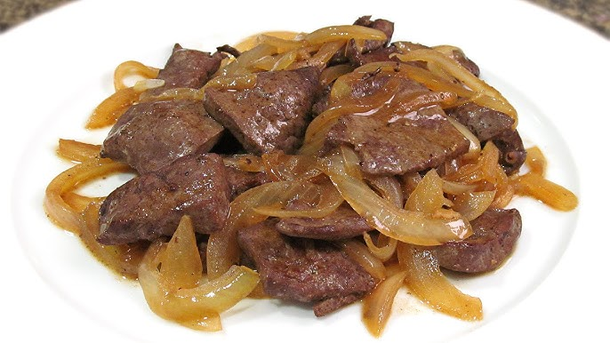
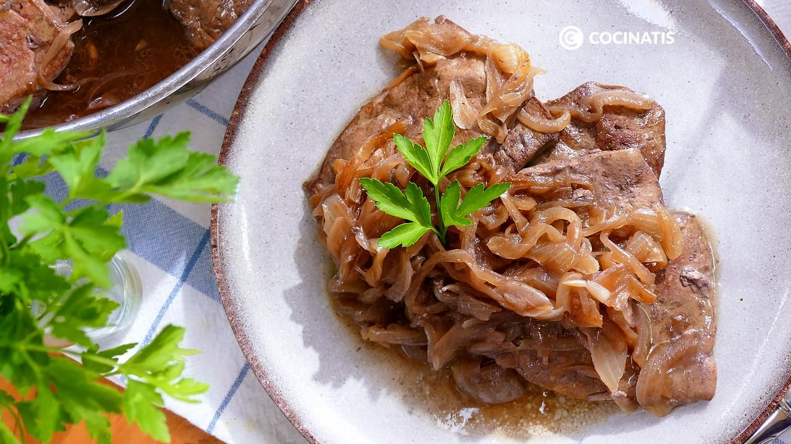
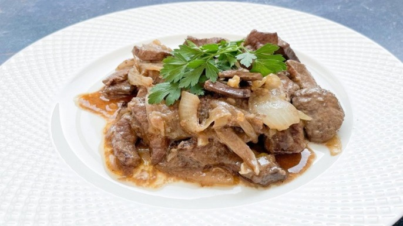

Hígado encebollado



Ingredientes:
- 500 g de hígado de res (o cerdo) en filetes
- 2 cebollas grandes (cortadas en juliana)
- 3 dientes de ajo (picados finamente)
- ½ taza de vinagre o jugo de limón (para limpiar el hígado)
- ½ taza de leche (opcional, para suavizar el sabor)
- ½ taza de caldo de carne o agua
- 1 cucharadita de comino en polvo
- 1 cucharadita de pimentón dulce
- Sal y pimienta al gusto
- 3 cucharadas de aceite de oliva o mantequilla
Preparación:
-
Preparar el hígado:
- Lava los filetes con vinagre o limón y enjuágalos con agua.
- Si deseas un sabor más suave, remójalos en leche durante 30 minutos y luego escúrrelos.
- Seca con papel absorbente y sazona con sal, pimienta y comino.
-
Cocinar la cebolla:
- En una sartén grande, calienta 2 cucharadas de aceite o mantequilla a fuego medio.
- Sofríe la cebolla y el ajo hasta que estén dorados y caramelizados (unos 10 minutos).
- Retira la cebolla y resérvala.
-
Cocinar el hígado:
- En la misma sartén, agrega una cucharada más de aceite y cocina los filetes de hígado a fuego medio-alto.
- Cocina 2-3 minutos por cada lado, evitando que se cocine demasiado (para que no quede seco).
-
Unir todo y dar sabor:
- Vuelve a añadir la cebolla a la sartén con el hígado.
- Agrega el pimentón y el caldo de carne, mezclando bien. Cocina por 2-3 minutos más para que se integren los sabores.
-
Servir:
- Acompaña con arroz, puré de papas o plátano frito.
Consejo:
- Si prefieres una salsa más espesa, puedes añadir una cucharadita de harina o maicena disuelta en un poco de agua.